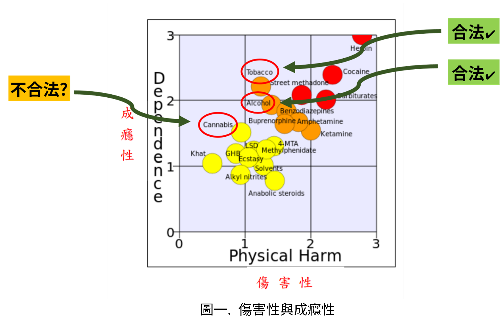
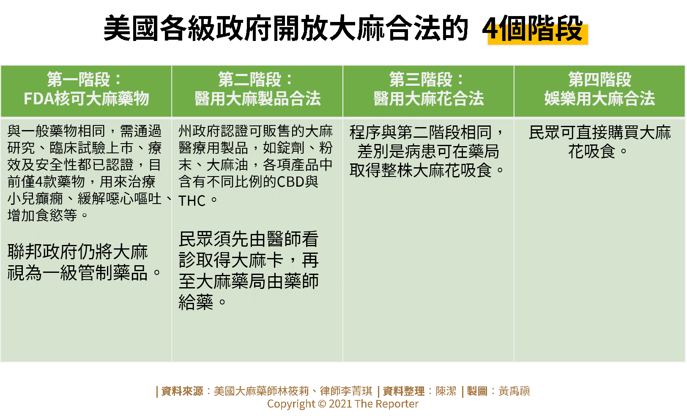

大麻(學名：Cannabis sativa，或稱marijuana)，又稱麻、大麻草、老鼠尾，為桑科一年生雌雄異株的草本植物，生長在熱帶地區。
大麻可以粗分為兩種，一種是不含有四氫大麻酚(THC)的漢麻，又稱為工業用大麻，主要是用來造紙、製作布料、繩索等工業用途 ; 剩下的則是含有THC的大麻，不同品種的含有THC成分之大麻品種，其THC含量也不太一樣。 大麻植株內含有許多化合物(約600多種)，其中最常被拿來關注的兩種成分為CBD與THC.
CBD (Cannabidiol): 大麻二醇，是近年來大麻醫用合法化最常被討論到的成分，又稱為”大麻合法化的先驅”。 多份研究指出，大麻二醇具有緩解 睡眠障礙、憂鬱、焦慮 等症狀，也可以用於舒緩化療伴隨的食慾不振，小兒難治型癲癇 患者身上。含有CBD成分的商品五花八門，有面膜、化妝品、保養品、泡澡球、精油等。
THC (Tetrahydrocannabinol): 四氫大麻酚，為大麻藥品成分中具有成癮性與精神活性的部分，為娛樂用大麻主要成分。在許多國家都是超級、超級、超級違法。
吸食大麻的方式包含捲煙、水煙槍，或是混入食物中食用，不過因為THC並不是平均分布，因此吸食大麻時只會使用「大麻雌株的花」，並不會使用葉子或其他部位。
根據聯合國統計，2004 年時全球約4%的成年人口每年至少使用大麻一次(16,200 萬人)， 約0.6%的成年人口每天至少使用大麻一次(2,250萬人)。2014年時，全球則約有 3.8%人口在過去一年中使用大麻。 緝獲量分布以美洲最是大宗，為75%，非洲次之：14%、歐洲5%。 大麻是全球盛行率第一名的毒品，為3.8%，與其餘毒品比較：化學合成毒品全球盛行率為 0.7%；鴉片類藥物全球盛行率為0.7%；古柯鹼之全球盛行率為0.38%；安非他命之全球盛行率為 0.8%；搖頭丸全球盛行率為 0.4%。 由此可見，大麻相較於其他毒品盛行率高出許多(UNODC, 2016)。 根據食藥署統計(108年) 我的國各種非法藥物中，最常被使用的前四名為安非他命(0.42%)、愷他命(0.40%)、搖頭丸(0.36%)及大麻(0.32%)。由此資料可知，大麻在台灣其實是較不盛行的毒品(相對於全世界使用狀況)。 值得一提的是，大麻其傷害與成癮，與合法的香菸與酒精比較，從【圖一】 可以看出其實是較低的。 這也是全世界大麻合法化一直是呼聲居高不下的議題的主要原因之一。
2020年5月7日，食品藥物管理署(簡稱食藥署)正式回應公共政策網路參與平臺提點子「開放醫療用大麻」提案回應: 醫療使用上，大麻素製劑因所含成分不同，有不同管理規定。 如僅以大麻二酚(CBD)為成分者，不屬於管制藥品，另依產品之處方、成分、含量、用法用量、用途/作用/效能說明及上市品之包裝(外盒、標籤、說明書)等中英文詳細資料，並符合藥事法第6條規定者，則以藥品列管。 若民眾經醫師診斷評估後開立此類藥品處方，可以申請藥品專案進口取得藥品。
如大麻二酚(CBD)成分之藥品內含四氫大麻酚(THC)成分或以大麻成熟莖及種子所製成之製品，THC含量超過10ug/g(10ppm)者，則屬於第二級管制藥品，目前僅Dravet syndrome跟Lennox-Gastaut syndromes小兒頑固型癲癇罕病患者能夠申請專案進口. 不符合以上規範所提及的任何大麻藥物都屬於2級毒品，違反者會觸犯刑法 上的毒品危害防制條例，屬於犯罪。
大麻合法化大致可以分成四個階段: 完全不合法、不合法但不嚴格取締、不合法但除罪化、完全合法。
部分國家如美洲、歐洲開始對少量持有大麻除罪化，2013 年烏拉圭更成為全球第一個大麻產銷全面合法的國家。 大麻合法化的支持者與政治官員們認為，大麻合法化後可以藉由公部門直接介入，達到掌握市場的效果 : (例如:發放販賣許可證、購買許可證等); 或是可以課稅，課來的稅金可以用於毒品勒戒治療，或是其他需要資金的部位; 除罪化或減輕罪刑則能夠讓警方將取締重點放在傷害性、成癮性更高的藥物上。或單純是鬆綁或完全合法只含有CBD成分之大麻藥品，讓遭受失眠、憂鬱、焦慮症等患者有其他選擇。 時至今日，部分國家如比利時、加拿大、捷克共和國、朝鮮、烏拉圭、荷蘭、以色列及美國部分州與華盛頓特區已可以在有條件的情況下合法使用大麻，或是採取違法但不執行的方式從寬處理大麻的使用。以下將就烏拉圭、加拿大、荷蘭、美國，四國作為探討。
| 烏拉圭: 全世界第一個大麻合法化的國家，政府統一制定大麻價格、並向販售藥局抽稅以及發放許可證給量產者。 年滿18歲的烏拉圭國民只要在政府資料庫登記，每月可向持國家執照的藥局購買40公克 大麻，也可自行種植最多6株大麻。
| 加拿大: 自2001年成為第一個允許癌症等重症末期患者自行種植、自用醫療用大麻的國家。 根據戒毒及精神衛生中心(CAMH)的統計數字,到2006年,儘管警方可能因管有大麻而被檢控,但仍有很大比例的人口使用大麻。 近一半（44%）的加拿大人承認至少嘗試過一次。CAMH報告還指出，到高中最後一年，近一半（46%）安大略省學生承認在過去一年裏吸食過大麻。 2017年為減少警力與檢方執法成本，同時制止犯罪組織通過大麻獲利，加拿大政府公布合法化草案。2018 年 10 月17日全面合法化娛樂用大麻，成為全球第二個合法持有、使用或種植大麻的國家。
| 荷蘭: 是大麻不合法，但不強制取締的國家。 「咖啡店(Coffeeshops)」是非法但不強制執行之大麻購買處。 自1976年嬉皮運動期間，荷蘭解除大麻消費的禁令後，荷蘭約有600家咖啡店銷售大麻，收入可能高達數億歐元。 18歲以上的荷蘭公民可以私下少量持有5公克或5株大麻，以及在持牌照之咖啡館販賣5公克以下的大麻產品，在規範之內雖屬非法行為但警察不會強行取締，但不可在公共場合使用。 2017年荷蘭國會為防止犯罪集團控制大麻的生產，更通過法案允許開放民眾持牌種植大麻。
| 美國: 合法化4階段(以圖表呈現)
看完各國的大麻政策後，台灣下一步可能可以推動的大麻政策是甚麼呢? 讓我們快速地回顧一下台灣的狀況:
考慮到台灣並無出現大量大麻使用人口的情況，全面合法化，將大麻市場納入政府管理，將不會是個可能性最高的方案，甚至還有可能會有宣示的意味存在，進而使得使用大麻的人口增加 ; 在考慮大麻的成癮性與傷害性後，政府可以考慮將大麻從二級毒品降級為三級毒品。將用於器查大麻違法等警力資源聚焦在其他傷害性與成癮性更高的其他藥物、藥品上，像是古柯鹼、海洛因等 ; 目前最有可行性的就是鬆綁CBD法規、或是完全達成醫用合法化。從2020年5月初對於大麻藥品鬆綁之宣布，可以推論近年食藥署對於不再是持完全不聞不問的保守態度。 若是可以讓CBD進入成藥體系，讓偏頭痛、憂鬱、適用於CDB藥品等患者，可以有其他選擇。
即便國際上大麻合法化呼聲不斷，台灣仍應該冷靜、不隨之起舞的方式，基於自身的情況，推動符合台灣適用的大麻合法。 許多人對於大麻的理解仍停留於負面、保守的印象，或許在推動大麻合法化的過程中，我們也應該停下來檢視，學生的教育是否需要同步推動，民眾是否有接收到正確的資訊等，綜合考量後，做出最符合台灣國情的決策。
中文部分 :
郭鐘隆，朱元珊 - 刑事政策與犯罪防治研究專刊
報導者 : 一個美國，4種合法樣態 -- 大麻合法為何這麼複雜？擷取自: https://www.twreporter.org/a/cannabis-for-medical-use-usa-experience
報導者 : 大麻THC成分藥物罕病先行，衛福部公告頑固型癲癇病兒可專案使用擷取自: https://www.twreporter.org/a/cannabis-for-medical-use-taiwan
停看聽 -107年全國物質使用調查結果擷取自: https://www.mohw.gov.tw/cp-4255-48855-1.html
PODCAST - 大麻煩不煩 In The Weedlaunch 英文部分 :a national survey of US adults(2018), Keyhani, Salomeh and Steigerwald, Stacey and Ishida, Julie and Vali, Marzieh and Cerd, Magdalena and Hasin, Deborah and Dollinger, Camille and Yoo, Sodahm R and Cohen, Beth E The benefits of marijuana legalization and regulation(2018) , Todd, Tamar WIKIPEDIA. Substance abuse.
Retrieved from https://en.wikipedia.org/wiki/Substance_abuse
WIKIPEDIA. Cannabis in Canada.Retrieved from https://en.wikipedia.org/wiki/Cannabis_in_Canada
WIKIPEDIA. Cannabis in UruguayRetrieved from https://en.wikipedia.org/wiki/Cannabis_in_Uruguay
WIKIPEDIA. Cannabis in the NetherlandsRetrieved from https://en.wikipedia.org/wiki/Cannabis_in_the_Netherlands